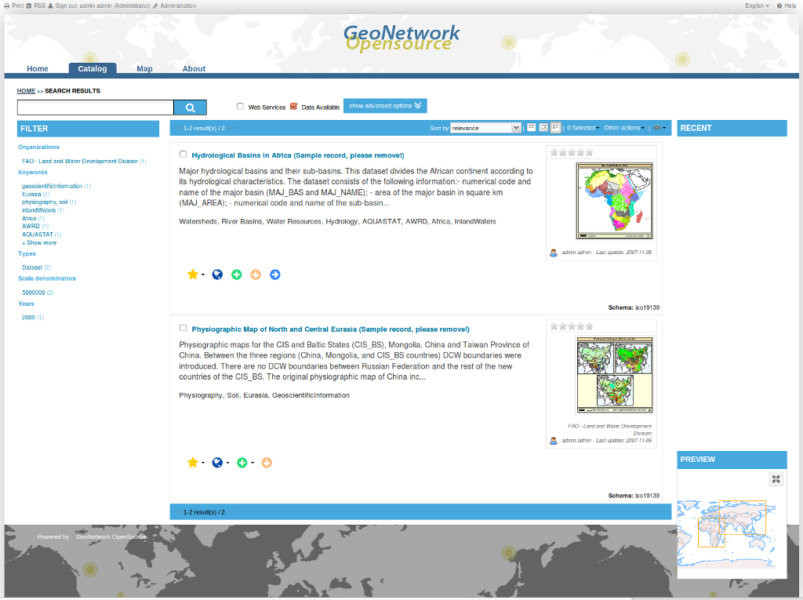

GeoNetwork¶
Metadaten Katalog¶
GeoNetwork OpenSource ist eine Kataloganwendung für räumliche Datenquellen. Die Anwendung bietet leistungsstarke Bearbeitungs- und Suchfunktionen für Metadaten sowie eine integrierte interaktive Kartenkomponente und basiert auf offenen Standards.
{kind=link}
Kernfunktionen¶
- Direkte Suche in lokalen und verteilten Metadatenkatalogen
- Hoch- und Runterladen von Daten, Grafiken, Dokumenten, PDF-Dateien und anderen Inhalten
- Interaktiver Web Map Viewer zur Kombination von Web Map Services (WMS) von weltweit verteilten Servern
- Aktualisierte Einträge werden über RSS News Feeds und als GeoRSS bereitgestellt
- Online Bearbeitung von Metadaten über ein leistungsstarkes System unter Verwendung von Vorlagen
- Native Unterstützung von nach ISO19115/ISO19119/ISO19139/ISO19110, FGDC und Dublin Core formatierten Metadaten
- Termingestütztes Ernten (Harvesting) und Synchronisieren von Metadaten zwischen verteilten Katalogen (GeoNetwork, CSW, OGC WxS GetCapabilities, Z39.50, WebDav, ArcSDE, Thredds, OGC WFS Features, OAI-PMH)
- Feingliedrige Zugriffskontrolle
- Gruppen- und Benutzerverwaltung
- Mehrsprachige Anwendungen
- Anzeige eines zufälligen Metadatensatzes auf der Startseite
Implementierte Standards¶
- OGC Catalogue Service-Web (CSW) 2.0.2 ISO
- Open Archives Initiatives (OAI-PMH)
- OpenSearch-Geo
- OAI-PMH
- Metadaten standards:
- ISO19115/ISO19119/ISO19139/ISO19110 und ISO Profiles
- Dublin Core
Details¶
Webseite: http://geonetwork-opensource.org
Lizenz: GNU General Public License (GPL) version 2
Software Version: 3.2.1
Unterstützte Plattformen: Windows, Linux, Mac
API Schnittstellen: Java
Support: http://www.osgeo.org/search_profile